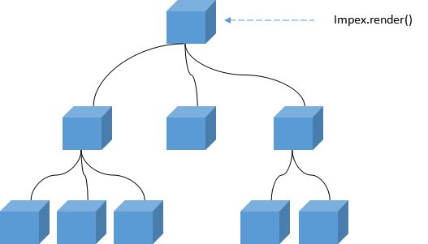

在 impex.js 中一切皆组件，即使没有注册过组件，当调用impex.render(...)时，
系统依然会自动创建一个匿名组件。一个impex应用中或多或少都会出现自定义组件，所以掌握组件的
详细信息是十分必要的
使用组件包括了注册、视图注入两部分
//注册组件
impex.component('x-div',{
$template : "<div {{=BINDPROPS}}>=={{=CONTENT}}==</div>"
})
<!-- 使用组件 -->
<x-div style='color:#aaa;font-size:2rem'>
impex
</x-div>
<x-div style='color:#666;font-size:1.5rem'>
soya
</x-div>注册组件必须在渲染视图模板之前执行，一旦视图中包含了所注册的组件，系统就会自动创建 一个该组件实例，并使用组件定义时的视图模板替换原始视图中的内容。
组件的注册是全局的，也就是说相同名字的组件会被覆盖
组件约束用来限制组件存在的作用域，比如只能存在于特定的组件中，或者只能包含特定的子组件， 就像tr只能包含td，并且td只能存在于tr样。
//注册组件
impex.component('x-head',{
$restrict:{
children:'x-button'//限制了子组件
},
$template:"<div><x-button>Button A</x-button></div>"
});
impex.component('x-body',{
$restrict:{
children:'x-button'//限制了子组件
},
$template:"<span><x-button>Button B</x-button></span>"
});
impex.component('x-button',{
$restrict:{
parents:'x-body'//限制了父组件
},
$template:"<button >{{=CONTENT}}</button>"
});
<x-head></x-head><!-- 不会渲染 -->
<x-body></x-body>
在组件模板中使用{{= ... }}语法就可以调用模板表达式，
帮你实现诸如标签体内容引用、属性引用等。
模板表达式只做编译前的替换，没有任何其他操作，比如监控之类。更多模板
表达式语法请看这里
impex.js 中的组件表现为一个自定义标签，和其他HTML标签样，组件上也可以书写属性， 但不一定会出现在最终的结果中，这取决于组件的视图模板
//注册组件
impex.component('x-div',{
$template : "<div style='{{=style}}' ></div>"
})
<!-- 使用组件 -->
<x-div style='color:#aaa;font-size:2rem' class="skin">
impex
</x-div>
使用模板表达式可以在视图模板中直接引用组件属性，只需要{{= 属性名 }}即可。
使用组件时，并不是书写的每个属性都会绑定到视图模板，这取决于实际的绑定表达式。
//注册组件
impex.component('x-div',{
$template : "<div {{=BINDPROPS}}></div>"
})
BINDPROPS 是一个内置的模板表达式常量，用来绑定组件使用时书写的所有属性。只能使用在属性中
组件书写时的所有属性都会自动的绑定到组件实例上，并且都以字符形式。
在HTML中，标签属性是不区分大小写的<a Href="">和<a href="">没有任何区别，都会被识别为小写格式， 所以，在组件模型的属性中存在的是小写格式的href
impex会自动把横线格式的属性自动转为驼峰格式(Camel-Case)的组件属性，如 <x-comp my-prop="x"></x-comp> 组件就会自动拥有myProp属性

之前说过，impex的入口总是从一个组件开始，如果render的DOM元素并不是一个已经注册的组件， 那么系统会自动创建一个匿名组件，并递归解析内部的所有组件，最终构成一个组件树。
因为使用递归方式构建，对于同步组件，子组件总是先于父组件构建完成，但是异步组件就像它的名字样，会异步完成， 如果需要在组件的生命周期回调中进行操作，请记住这些信息
每个组件都应该是一个拥有独立逻辑和视图的自包含的对象，不应该直接使用父组件的属性或者方法， 如果要使用，也应该通过接口注入的方式进行转移，以此来保持组件内部属性的独立。
但是，如果你想，impex 也支持。
$parent属性来访问父组件实例find()方法来查找子组件希望以上内容对你有所帮助，如果发现错误或者想参与编辑，可以在 Github 上 fork 此站点